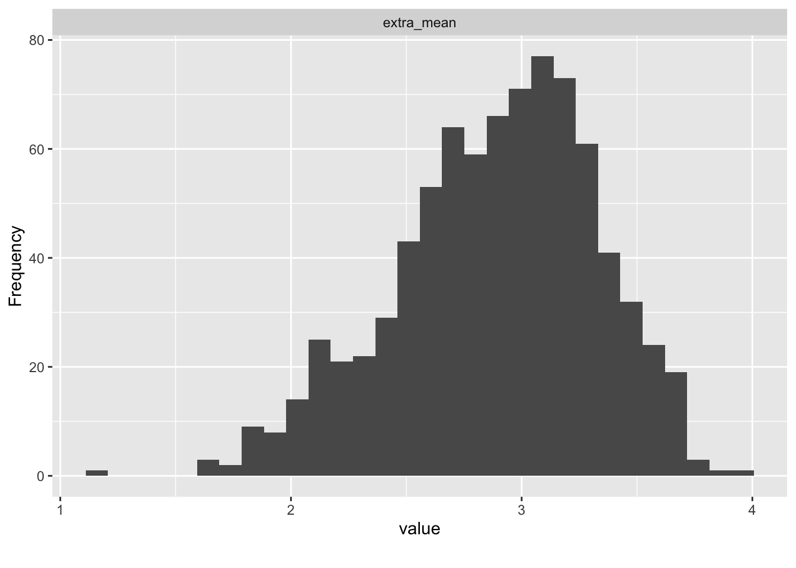

Kapitel 8 Fallstudie Normierung
8.1 Explorative Datenanalyse
data_url <- "https://raw.githubusercontent.com/sebastiansauer/modar/master/datasets/extra.csv"
extra <- read_csv(data_url)
extra %>%
select(ends_with("_mean")) %>%
plot_histogram()
extra %>%
select(extra_mean, n_facebook_friends, n_hangover, age, sex, time_conversation, sleep_week, sleep_wend) %>%
describe_distribution()
#> Variable | Mean | SD | IQR | Range | Skewness | Kurtosis | n | n_Missing
#> ------------------------------------------------------------------------------------------------------------
#> extra_mean | 2.89 | 0.45 | 0.60 | [1.20, 4.00] | -0.43 | -0.11 | 822 | 4
#> n_facebook_friends | 532.61 | 3704.48 | 300.00 | [0.00, 96055.00] | 25.67 | 662.76 | 671 | 155
#> n_hangover | 9.47 | 30.72 | 9.00 | [0.00, 738.00] | 17.54 | 399.53 | 800 | 26
#> age | 25.50 | 5.75 | 6.00 | [18.00, 54.00] | 1.81 | 4.39 | 813 | 13
#> time_conversation | 1.34e+06 | 3.65e+07 | 10.00 | [0.00, 1.00e+09] | 27.37 | 749.00 | 749 | 77
#> sleep_week | 18.00 | 26.98 | 2.00 | [5.00, 85.00] | 2.16 | 3.46 | 12 | 814
#> sleep_wend | 8.25 | 1.22 | 2.75 | [7.00, 10.00] | 0.52 | -1.27 | 12 | 8148.2 Normwerte berechnen
8.2.1 Hilfsfunktionen
Zwei Hilfskräfte (in Form von R-Funktionen) brauchen wir: Die erste Funktion berechnet Normwerte, s.Infos here:
convert_to_norm_value <-
function(score, data_vec, mu = 0, sigma = 1) {
numerator <- (score - mean(data_vec, na.rm = TRUE))
out <- (numerator / sd(data_vec)) * sigma + mu
return(out)
}Probieren wir es aus. Aber zuerst müssen wir die NA entfernen,
da das convert_to_norm_value nicht kann.
extra_drop_na <-
extra %>%
select(extra_mean) %>%
drop_na()
convert_to_norm_value(score = 3, data_vec = extra_drop_na$extra_mean)
#> [1] 0.2415975Diese Funktion wenden wir für mehrere Normierungsarten an, im Rahmen einer zweiten Funktion:
compute_all_norms <- function(x, min_score = 0, max_score = max(x), by = .5){
x_ecdf <- ecdf(x) # empircal cumulative distribution function - gives back function
out <-
tibble(
score = seq(from = min_score, to = max_score, by = by),
perc_rank = x_ecdf(score),
z = map_dbl(score, ~ convert_to_norm_value(.x, data_vec = x)),
stanine = map_dbl(score, ~ convert_to_norm_value(.x, data_vec = x, mu = 5, sigma = 2)),
T = map_dbl(score, ~ convert_to_norm_value(.x, data_vec = x, mu = 50, sigma = 10)),
perc_normal = map_dbl(z, pnorm)
) %>%
mutate(stanine = case_when(
stanine > 9 ~ 9,
stanine < 1 ~ 1,
TRUE ~ stanine
))
return(out)
}8.2.2 Normwerte berechnen
extra %>%
select(ends_with("_mean")) %>%
drop_na() %>%
map(~ kable(compute_all_norms(., min_score = 1, max_score = 4, by = .1),
digits = 2)) %>%
print()$extra_mean
| score | perc_rank | z | stanine | T | perc_normal |
|---|---|---|---|---|---|
| 1.0 | 0.00 | -4.19 | 1.00 | 8.13 | 0.00 |
| 1.1 | 0.00 | -3.97 | 1.00 | 10.35 | 0.00 |
| 1.2 | 0.00 | -3.74 | 1.00 | 12.56 | 0.00 |
| 1.3 | 0.00 | -3.52 | 1.00 | 14.78 | 0.00 |
| 1.4 | 0.00 | -3.30 | 1.00 | 16.99 | 0.00 |
| 1.5 | 0.00 | -3.08 | 1.00 | 19.20 | 0.00 |
| 1.6 | 0.00 | -2.86 | 1.00 | 21.42 | 0.00 |
| 1.7 | 0.01 | -2.64 | 1.00 | 23.63 | 0.00 |
| 1.8 | 0.02 | -2.42 | 1.00 | 25.85 | 0.01 |
| 1.9 | 0.03 | -2.19 | 1.00 | 28.06 | 0.01 |
| 2.0 | 0.05 | -1.97 | 1.06 | 30.28 | 0.02 |
| 2.1 | 0.08 | -1.75 | 1.50 | 32.49 | 0.04 |
| 2.2 | 0.10 | -1.53 | 1.94 | 34.70 | 0.06 |
| 2.3 | 0.12 | -1.31 | 2.38 | 36.92 | 0.10 |
| 2.4 | 0.16 | -1.09 | 2.83 | 39.13 | 0.14 |
| 2.5 | 0.21 | -0.87 | 3.27 | 41.35 | 0.19 |
| 2.6 | 0.28 | -0.64 | 3.71 | 43.56 | 0.26 |
| 2.7 | 0.36 | -0.42 | 4.15 | 45.77 | 0.34 |
| 2.8 | 0.43 | -0.20 | 4.60 | 47.99 | 0.42 |
| 2.9 | 0.51 | 0.02 | 5.04 | 50.20 | 0.51 |
| 3.0 | 0.60 | 0.24 | 5.48 | 52.42 | 0.60 |
| 3.1 | 0.69 | 0.46 | 5.93 | 54.63 | 0.68 |
| 3.2 | 0.78 | 0.68 | 6.37 | 56.84 | 0.75 |
| 3.3 | 0.85 | 0.91 | 6.81 | 59.06 | 0.82 |
| 3.4 | 0.90 | 1.13 | 7.25 | 61.27 | 0.87 |
| 3.5 | 0.94 | 1.35 | 7.70 | 63.49 | 0.91 |
| 3.6 | 0.97 | 1.57 | 8.14 | 65.70 | 0.94 |
| 3.7 | 0.99 | 1.79 | 8.58 | 67.91 | 0.96 |
| 3.8 | 1.00 | 2.01 | 9.00 | 70.13 | 0.98 |
| 3.9 | 1.00 | 2.23 | 9.00 | 72.34 | 0.99 |
| 4.0 | 1.00 | 2.46 | 9.00 | 74.56 | 0.99 |
Bühner, M. 2011. Einführung in Die Test- Und Fragebogenkonstruktion. PS Psychologie. Hallbergmoos: Pearson Studium. https://books.google.de/books?id=Y4990CfV3wgC.
Lienert, Gustav A., and Ulrich Raatz. 1998. Testaufbau Und Testanalyse. 6. Auflage. Weinheim: Beltz, Psychologie Verlags Union.
Mair, Patrick. 2018. Modern Psychometrics with r. New York, NY: Springer Science+Business Media.
Satow, L. 2012. “SCI - Stress- und Coping-Inventar.” https://doi.org/10.23668/PSYCHARCHIVES.4604.
———. 2020. “B5T®. Big-Five-Persönlichkeitstest.” https://doi.org/10.23668/PSYCHARCHIVES.4611.
Sauer, Sebastian. 2019. Moderne Datenanalyse Mit r: Daten Einlesen, Aufbereiten, Visualisieren Und Modellieren. 1. Auflage 2019. FOM-Edition. Wiesbaden: Springer. https://www.springer.com/de/book/9783658215866.
Steyer, Rolf, and Michael Eid. 1993. Messen Und Testen. Heidelberg: Springer.